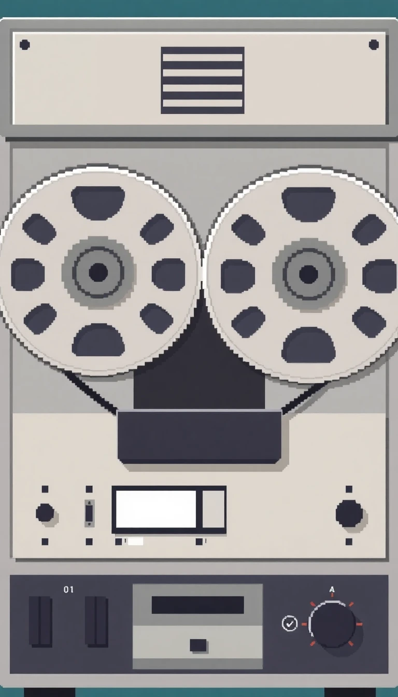
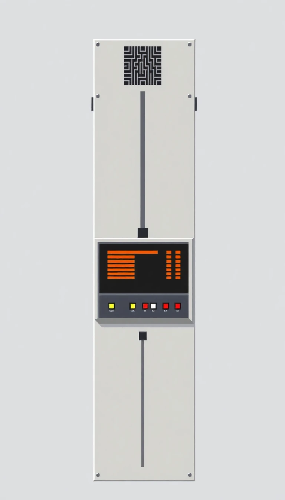

Professional Broadcast Gear
Dougtone DougPro bietet hochwertige Ausrüstung für Rundfunkprofis und Medienproduzenten. Verlassen Sie sich auf Dougtone für Leistung, Zuverlässigkeit und Innovation im Broadcast-Bereich.
Video Kameras (Studio & ENG)
Model: DougPro 7400: Eine High-End-Studiokamera für die Fernsehproduktion mit integrierten Farbkorrektur- und Kontrastverbesserungsfunktionen.
Model: DougPro 7200 ENG: Eine portable Kamera für elektronische Nachrichtenaufnahme (ENG) mit eingebautem Mikrofon und Batteriebetrieb, die es Reportern ermöglicht, vor Ort zu filmen und zu übertragen.
Video Umschalter & Mischer
Model: DougPro 7400X: Ein professioneller Video-Umschalter mit mehreren Eingängen und nahtlosen Übergängen zwischen Video-Feeds, ideal für Live-Übertragungen.
Model: DougPro 7600 Audio/Video Mischer: Eine Kombination aus Audio- und Video-Mischer mit Fader-Steuerung, perfekt für Nachrichtenredaktionen oder Live-Übertragungen, bei denen die Synchronisation von Ton und Bild entscheidend ist.
Audio Ausrüstung
Model: DougPro 7100: Ein professionelles Mehrkanal-Mischpult, das in Radiosendern und Fernsehstudios eingesetzt wird und sich durch ein robustes, modulares Design auszeichnet.
Model: DougPro 7150: Ein Tonbandgerät mit verbesserter Klangqualität und Rauschunterdrückung, das sowohl in der Musikproduktion als auch im Rundfunk häufig verwendet wird.
Signalprozessoren
Model: DougPro 7500: Eine Echtzeit-Farbkorrektur- und Grading-Einheit zur Verbesserung der Klarheit und Konsistenz der Farbe während Live-Übertragungen.
Model: DougPro 7800 Audio Prozessor: Ein Audio-Prozessor in Broadcast-Qualität, der die Klangtreue durch Anpassen der Frequenzbereiche und Reduzieren von Rauschstörungen verbessert.
Übertragungsausrüstung
Model: DougPro 7900 Transmitter: Ein Hochleistungs-FM-Sender für Radiosender, konzipiert für zuverlässige, weitreichende Übertragungen.
Model: DougPro 8000 Satelliten Uplink: Ein fortschrittliches Uplink-System für Satellitenübertragungen, das von großen Sendern zur globalen Ausstrahlung von Inhalten verwendet wird.
Monitore & Displays
Model: DougPro 7300 Color Monitor: Ein CRT-basierter Farbmonitor, der für genaue Farbwiedergabe in Fernsehstudios und Kontrollräumen entwickelt wurde.
Model: DougPro 7500 Teleprompter: Ein hochmodernes Teleprompter-System für Nachrichtensprecher, das sanftes Scrollen des Textes und Fernbedienungsbetrieb ermöglicht.
Schnitt und Postproduktion
Model: DougPro 7700 Video Editor: Ein lineares Schnittsystem, das es Sendern ermöglicht, Video-Material für die Endausstrahlung nahtlos zu schneiden und zusammenzufügen.
Model: DougPro 7200 Audio Editor: Eine Mehrspur-Audio-Editing-Suite für die Postproduktion, die mit Video-Editoren integriert werden kann, um synchronisierte audiovisuelle Inhalte zu erstellen.
Studio Ausrüstung
Model: DougPro 7900 Studio Leuchten: Hochintensive, einstellbare Beleuchtungssysteme mit hervorragender Wärmeableitung und Energieeffizienz, perfekt für Studioaufnahmen.
Model: DougPro 8000 Set Design Werkzeuge: Ein Kit mit modularen Set-Teilen, Hintergründen und Requisiten für schnelle Set-Konstruktion und ästhetische Vielseitigkeit bei Live-Fernsehproduktionen.